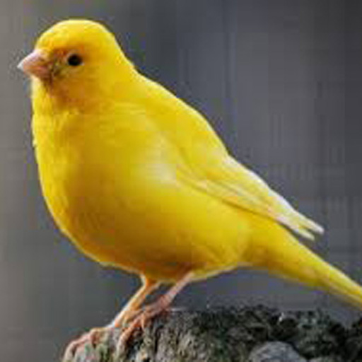
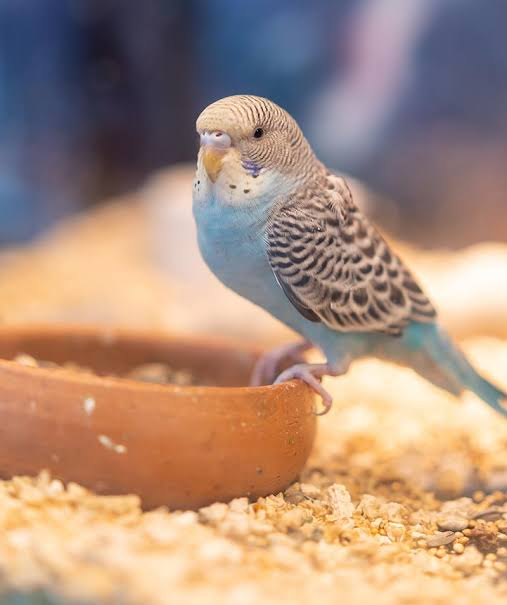
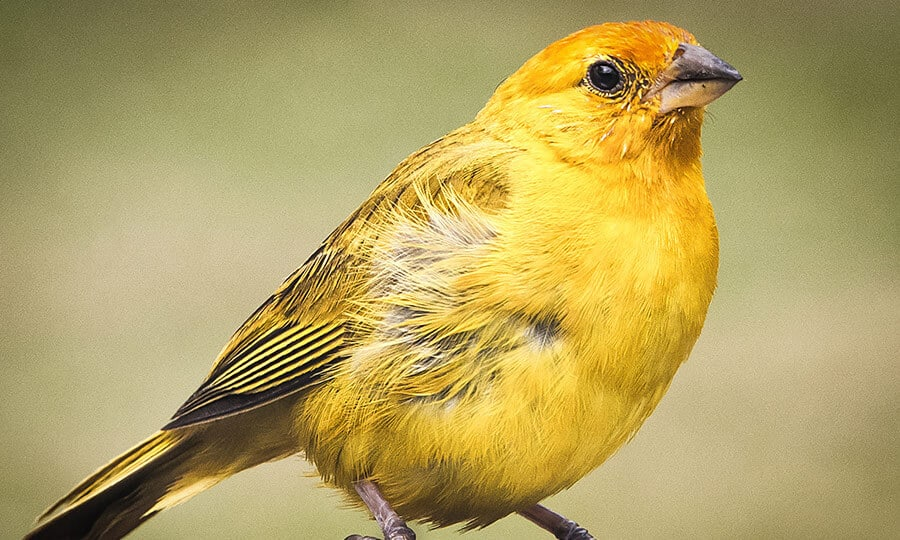
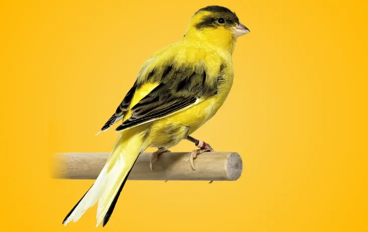
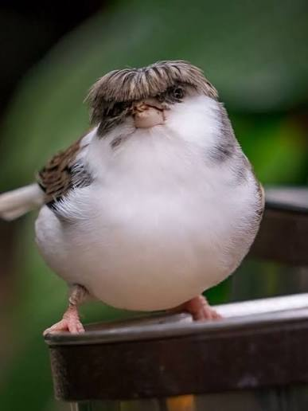
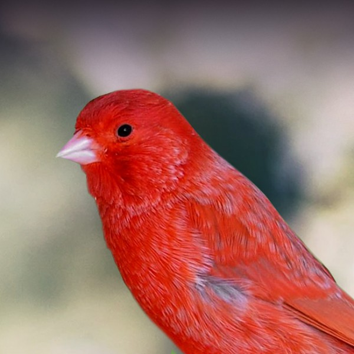
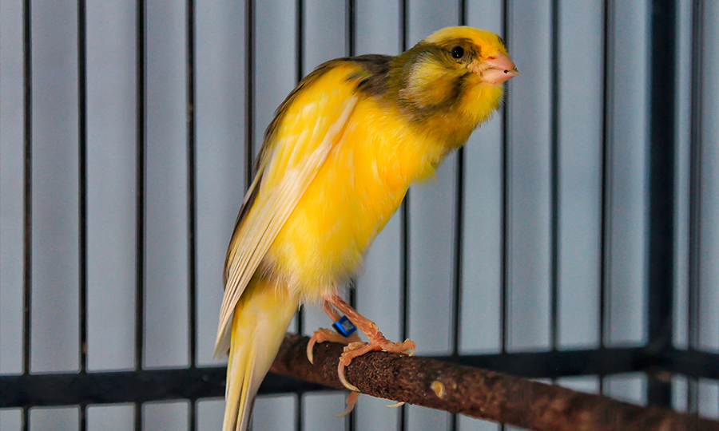
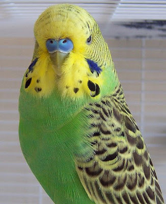
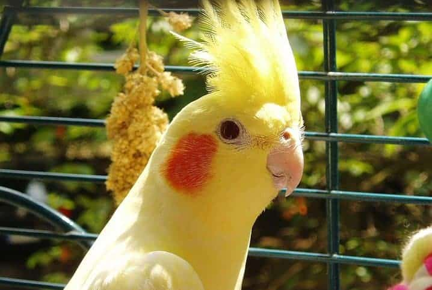

Belga
Postura ereta, ombros altos e silhueta angular. É a base de muitas raças de forma.
Um guia ilustrado, em formato de revista, para a especialidade que ensina a observar, cuidar e respeitar as pequenas vozes aladas que moram em nossas casas.
Manter uma ave em casa não é apenas escolher uma gaiola bonita. No Brasil, a criação, captura, transporte e comercialização de aves silvestres é regulamentada por leis federais — e o desbravador precisa cumpri-las com responsabilidade.
A Lei de Crimes Ambientais (Lei nº 9.605/1998) proíbe capturar, manter em cativeiro, transportar ou comercializar aves da fauna silvestre brasileira sem autorização. Aves nativas, como o canário-da-terra ou o trinca-ferro, só podem ser criadas mediante registro no SISPASS/IBAMA, com anilhas oficiais e procedência comprovada.
Já espécies exóticas domesticadas, como canários-belgas, periquitos-australianos, calopsitas e agapornis, podem ser criadas livremente, desde que adquiridas em criadouros legalizados que emitam nota fiscal e anilha.
O justo cuida da vida dos seus animais.— Provérbios 12:10

Cuide de um pássaro — ou de um casal — por, no mínimo, meio ano. É tempo suficiente para aprender a reconhecer humores, vozes e necessidades.
Trocar água fresca pela manhã, oferecer ração equilibrada e observar o comportamento.
Lavar gaiola, poleiros e comedouros com água quente e sabão neutro. Sem produtos químicos perfumados.
Pelo menos 30 minutos diários de luz solar indireta — essencial para a síntese de vitamina D₃.
Conversar, assobiar e oferecer petiscos da mão. Aves são animais sociais e inteligentes.
Documente pelo menos um mês de cuidados com um pássaro de gaiola. O modelo abaixo serve como inspiração — cole no caderno, preencha à mão, ilustre.
O canário doméstico (Serinus canaria domestica) descende do canário-silvestre, ave nativa das Ilhas Canárias, Açores e Madeira. Foi levado à Europa por marinheiros espanhóis no século XV e, em 500 anos de criação seletiva, deu origem a centenas de variedades — de canto, cor e forma.

Os primeiros canários selvagens tinham plumagem esverdeada e canto suave. Capturados pelos espanhóis nas Ilhas Canárias por volta de 1478, foram criados em mosteiros, onde só os machos eram vendidos — para manter o monopólio da reprodução.
Quando um naufrágio levou um carregamento à ilha de Elba, no século XVI, italianos começaram a reproduzi-los, e a partir daí o canário se espalhou pelo mundo. Hoje há canários amarelos, brancos, vermelhos, mosaicos e até crestados.

Postura ereta, ombros altos e silhueta angular. É a base de muitas raças de forma.

Variedade alemã famosa pelo canto suave e rolado, ideal para concursos de canto.

Pequeno e arredondado, divide-se em “Corona” (com topete) e “Consort” (sem topete).

Variedade de cor obtida pelo cruzamento com pintassilgo-da-venezuela; plumagem alaranjada intensa.
Base da dieta. Pequeno, claro e alongado — fornece carboidratos e proteínas.
Redondo e amarelado. Mais leve que o alpiste, ótimo para o dia a dia.
Sementinha preta e fina, rica em óleos. Dada em pequena quantidade.
Brilhante e marrom-avermelhada. Faz a pluma ficar mais sedosa.
Energética e fácil de digerir, ideal em períodos de muda e reprodução.
Gaiola: mínimo de 40 cm de comprimento para que possa voar de poleiro a poleiro. Sempre arejada, longe de correntes de ar e do sol direto do meio-dia.
Alimentação: mistura de sementes diariamente, água limpa, frutas e verduras três vezes por semana. Ofereça osso de siba (cálcio) e areia (digestão).
Higiene: bebedouro e comedouro lavados diariamente; gaiola completa pelo menos uma vez por semana.
Saúde: fique atento a penas eriçadas, apatia, olhos fechados e perda de apetite — sinais de doença que pedem visita ao veterinário de aves.


O periquito-australiano (Melopsittacus undulatus) é, como o nome indica, originário da Austrália. Vive em bandos enormes nas regiões secas e semidesérticas do interior do continente, atravessando longas distâncias em busca de água e sementes.
Na natureza, come principalmente sementes de gramíneas, brotos e folhas tenras. Em cativeiro, sua dieta é composta por mistura de painço, alpiste, aveia e trigo-mourisco, complementada com folhas verdes, frutas e ração extrusada própria para psitacídeos.
É uma ave cavernícola: faz ninho em ocos de eucaliptos. Em criação, aceita ninhos de madeira com cerca de 20 cm de altura. A fêmea põe de 4 a 8 ovos brancos, que choca por 18 dias.
Vive sempre em grupo — sente-se solitário quando criado sozinho. É curioso, brincalhão, capaz de imitar palavras (especialmente os machos), adora espelhos, sininhos e escadas. Convive bem com humanos e, quando bem socializado, vira companheiro de mão.
Em grande parte do Brasil, a ave de estimação mais comum — fora canários e periquitos — é a calopsita (Nymphicus hollandicus). Pequena, dócil e expressiva, conquistou os lares brasileiros nas últimas décadas.

Mede cerca de 30 cm com a cauda. Possui topete e bochechas alaranjadas. É um dos menores representantes da família das cacatuas. Vive em média de 15 a 20 anos.
Existem mais de 20 mutações: silvestre (cinza), arlequim, lutino (branco-amarelado de olhos vermelhos), pérola, canela, face branca e albino, entre outras.
Precisa de gaiola ampla (mínimo 60 cm), brinquedos para mordiscar, banhos regulares com borrifador, dieta rica em sementes, frutas, verduras e ração específica. Detesta solidão — quanto mais convívio, mais afetuosa fica. Os machos aprendem a assobiar melodias inteiras.
A Bíblia menciona muitas aves — algumas usadas como alimento, outras como símbolos espirituais, e várias mantidas próximas do homem em sinal de cuidado e ternura. Três delas podem ser consideradas “aves de estimação”:
“…porém o pobre não tinha coisa nenhuma, senão uma pequena cordeira… e comia do seu bocado, bebia do seu copo, e dormia no seu seio.”
“Não se vendem dois passarinhos por um asse? E nenhum deles cairá em terra sem a vontade de vosso Pai.”
“Brincarás com ele, como se fora um passarinho, ou o prenderás para as tuas meninas?”
“…mandará tomar para aquele que se há de purificar duas aves vivas e limpas…”
Variedades de canários reconhecidas no mundo, entre canto, cor e forma.
Pode ser a expectativa de vida de um canário bem cuidado em cativeiro.
Ano em que os primeiros periquitos-australianos foram levados para a Inglaterra por John Gould.
Palavras: o vocabulário recorde de um periquito chamado Puck, registrado no Guinness Book.
A calopsita é a única ave de companhia que comunica humor pela posição do topete.
Aves enxergam luz ultravioleta — para elas, as cores das penas brilham de forma invisível a nós.